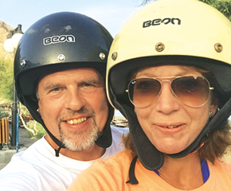

The product has been added to your basket

The bald truth
As a teenage boy, you’re prepared for certain inevitabilities – acne, a bum-fluff moustache, smelly pits. I was ready for all that. But I wasn’t ready to lose my hair. A circular patch of skin appeared on the back of my head when I was 15. With each year, it got bigger, as my hair thinned on top and retreated from the sides, like it was losing a battle with the insurgent forces of my scalp. Trips to the barber became an embarrassing exercise in mutual deception – we both knew there wasn’t much left to cut. By my early 20s I was wearing a beanie hat all the time – even when I was in a suit, even at my graduation. I remember when I’d had enough. I was 23, and couldn’t look at myself in the mirror without being immediately drawn to the wispy comb-over of hair, as thin as glass noodles. For years my friends had told me it would look better if I shaved it, and now I realised it was my only option. I went to the barber and instead of asking for my ever-hopeful usual – ‘Just make it look as good as you can’ – I told him to shave it off.
Trips to the barber became an embarrassing exercise in mutual deception – we both knew there wasn’t much left to cut
There are obviously plenty of worse hereditary afflictions in this world than baldness. Still, the feeling of sitting in that chair and instantly transforming from the version of yourself you recognise into a bald man who seems a total stranger, is one I’ll never forget. I thought I might end up with a cool, shaved look. Instead, my bald head reminded me of my family, in particular my older uncles. It wasn’t a look I was going for – much as I liked them. Little jokes on TV shows began to stick with me. In 30 Rock, the bald character Pete is forced to wear a wig and suddenly becomes popular and successful. In The League, there’s a joke about a score system for potential boyfriends: being bald gets you a minus one. In real life, no one would ever say something like that, but I imagined people were thinking it – I was a minus one. Beanies became my best friend. By now I was wearing them in the bedroom at fancy dinner parties, and even when I’d do bits on the news on TV (presenters were never particularly impressed when I’d shuffle on, looking like someone from an angsty punk band). Despite my own insecurities, it’s not as though women have ever shrieked in horror and run away when I’ve removed my hat. In fact, I think that, for many women, dating a bald guy is a lot like going to boot camp at 7am on a weekend, or visiting friends of your parents – it seems awful in principle, but once you’re actually doing it, it’s fine. Since being bald I’ve been in relationships and been single and actually, I don’t think it’s been a problem either way.
Shaving my hair off took about 10 minutes, but adjusting took a lot longer. I’d slowly try to go without a hat in different scenarios
But still, I wanted to know if there was anything that could be done, so I made appointments to see a few experts, including a hair transplant specialist. Most of them told me that the chances of regrowth were slim, and I could only expect to maintain the level of growth I had now (almost none). A clinic on Harley Street told me that my kind of hair loss cannot be remedied with any kind of transplant. So that was that. In the absence of a ‘cure’, I had to begin the process of learning to live with my look. Shaving off my hair took about 10 minutes, but adjusting to being properly bald was a longer process. I’d slowly try to go without a hat in different scenarios – at work, with mates, on dates. And they all passed without the world ending. Still, it’s only in the past few months that I’ve started to accept that I’m now a bald man and been able to recognise the ‘me’ in the mirror as me. That said, I still look forward to winter, when wearing a beanie is more acceptable, but I do try to make myself go out in public at least once a week without putting on a hat. Most importantly, I’ve started to accept that my issues around baldness are mostly my own. I’m sure there are people for whom a bald head is a real turn off, but unless they are unusually cruel, they’d never say it to my face. I can blame every bad date or awkward encounter on my hair, or I can just leave my follicle paranoia behind and accept that I’m forever going to be a bald man. And I think that will probably be fine. If you know someone who’s struggling with hair loss, they can go in-store and ask the Boots pharmacy team about possible hair-retention treatments.
Sam's top advice for the bald men in your life
-
‘Hair doesn’t fall out in a uniform style, so when it goes you’re often left with the “tufty” look. Suggest he gets it shaved down to 1in or ½in (the barber can advise) – then it will look more like a style choice.’
-
‘Most bald men can still grow facial hair, so encourage him to keep a groomed beard or a neatly trimmed tash. Again, a barber can show him how to blend it with a shaved head.’
-
‘Bald scalps require care and attention, so he’ll need to invest in a moisturiser with SPF that protects the skin and leaves it looking oil free.’
-
'There are treatments, but most of them offer to help stop further loss rather than promote regrowth. Just make sure he doesn’t place all his hopes on suddenly having a bonce like Russell Brand after a few sprays of a magic tonic.’
For more information or to book a consultation
(available in selected stores), go to boots.com/
hairloss
Foot note copy Sit vollab ius dolore doluptae. Nem coreriam repe parum quia quis esequidi cone
ma num vel mil inullupta simendae. Aque nus aut plam eum res